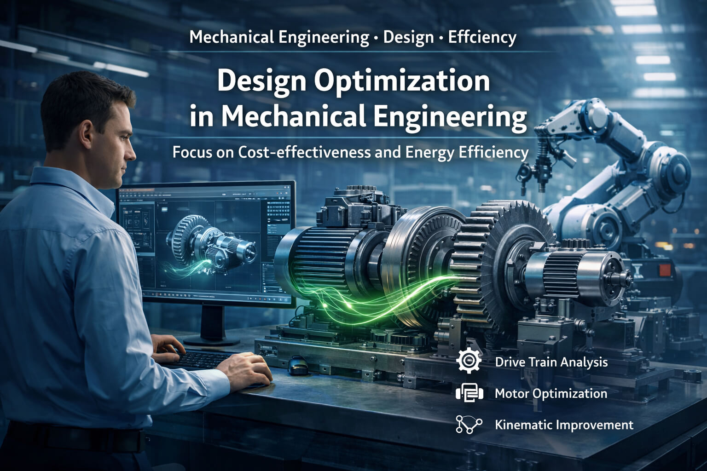

Analysis of existing designs
Systematic technical review of existing machines and assemblies to identify relevant optimization potential in terms of function, energy demand, robustness and cost-effectiveness.
Analysis · Design · Efficiency
Berkone Engineering supports machine builders in the technical and economic improvement of existing machines, assemblies and drive systems — independently, with sound engineering judgment and a clear focus on practical improvements, often without requiring a complete redesign from scratch.

Why Berkone
Neutral evaluation of existing solutions without internal blind spots and without ties to specific manufacturers, components or technologies.
Optimization not as an end in itself, but with clear attention to energy consumption, manufacturing cost, operating cost, technical risk and practical feasibility.
Especially valuable where machines fundamentally work, but it is unclear whether sizing, efficiency and design are already truly optimized.
When it makes sense
Typical real-world situations in which an independent technical review creates additional value — especially for existing machines and systems in ongoing operation.
When machines consume more energy than expected or drive systems may be oversized.
When it is not clear internally whether the current design and sizing are already technically and economically optimal.
When wear, vibration or peak loads occur repeatedly and the causes are not fully understood.
When designs are complex, material-intensive or continuously expensive in operation.
When machines basically work, but should be improved technically and economically.
When neutral technical evaluation is needed to support decisions or identify hidden improvement potential.
Use Cases
Typical challenges from real machine projects – from energy consumption and drive sizing to design optimization, load assessment and economically sound redesign.
Gimbal complete screw jack enables controlled self-adjustment of up to ±5° to real installation and load conditions. This is particularly beneficial when the force vector is not parallel to the axis of the jack or the screw. In practice, this is especially relevant for high loads and large sizes, where manufacturing and assembly tolerances often prevent perfectly parallel alignment of guides and screw jacks. The zero position is maintained at all times – a key advantage in systems with several synchronized screw jacks. At the same time, internal stresses are reduced and the service life of the overall system is increased.

The choice of the right motion profile has a direct impact on acceleration, peak loads, torque demand and the energy consumption of a drive system. Depending on the combination of start and end conditions, different motion profiles are available, each of which significantly influences the motion sequence and the load on the motor. By selecting a technically suitable profile, motors can be sized more precisely to actual requirements, efficiencies can be improved and unnecessary safety margins can be avoided. This makes the drive not only more efficient, but also economically well dimensioned.
Image note: The illustration shows the table “Available Motion Profiles” from the sizing tool MotionSizer by Schneider Electric.

An efficient and space-saving design is achieved when the construction is consistently aligned with the specific task and the real loads involved. FEM analysis of key components helps avoid overdimensioning, save material where appropriate and reduce the cost of the overall machine. This results in load-appropriate designs that require less installation space, can be manufactured more economically and perform their function reliably.
Image note: Shown is a 3D model of a machine concept similar to the UW23 by MBO Postpress Solutions GmbH.

Especially in the product development process (PEP) and in custom development projects within the engineer-to-order (ETO) environment, design projects are shaped by numerous dependencies, iterations and interfaces. A planning tool such as gleisen.com helps structure tasks, deadlines and responsibilities transparently and specifically improves collaboration between engineering, purchasing, work preparation and assembly. This simplifies coordination, makes interfaces easier to manage and enables more efficient project execution.
Image note: Shown is the dashboard of gleisen.com.

Services
Systematic technical review of existing machines and assemblies to identify relevant optimization potential in terms of function, energy demand, robustness and cost-effectiveness.
Review and fit-for-purpose sizing of motors, gearboxes and drive systems taking into account load profiles, dynamics, safety factors and overall efficiency.
Analysis of design-related and drive-related influences on energy demand with the goal of reducing avoidable losses and deriving economically viable improvements.
Evaluation of motion sequences, acceleration behavior and moving masses to improve cycle performance, reduce component stress and increase energy efficiency.
Engineering calculations to evaluate stiffness, stress, oversizing, service life and functional safety of mechanical components.
Technical improvement of existing machines and assemblies to reduce weight, material usage, part count, manufacturing effort, assembly complexity and operating cost.
Approach
Capture the existing design, technical boundary conditions, objectives and possible issues in operation or cost performance.
Review drives, kinematics, efficiency, components, load cases and design interactions for relevant technical and economic improvement potential.
Develop technically sound improvement proposals with clear engineering reasoning and an assessment of benefit, effort and likely economic effect.
If required, Berkone supports detailing, coordination with internal teams, suppliers or implementation partners, as well as the further technical refinement of the solution.
Profile
Berkone Engineering is led by Yevgen Yeshchenko, M.Sc. in Mechanical Engineering. He brings more than 20 years of experience in design and development, including over 15 years in special-purpose machinery and in the development of complex machines and drive systems.
His professional background includes the development and optimization of machines and assemblies across a range of industrial applications, including special-purpose machinery, packaging equipment, drive technology and automated production systems.
Core areas of expertise include the sizing and optimization of drive systems, engineering calculations such as FEA, service life and sizing analyses, as well as the systematic review of existing designs in terms of function, efficiency, robustness and cost.
Experience from design, technical leadership and close cooperation with production and assembly enables a practical evaluation of engineering solutions — not only from a design perspective, but also with regard to implementation, operation and economic viability.
Berkone’s objective is to make optimization potential visible where it is technically sound, economically justified and genuinely usable in real machine applications.
“My focus is on existing machines and designs — where an independent engineering perspective helps make real optimization potential visible and economically usable.”
Yevgen YeshchenkoInitial assessment
In many cases, existing drawings, documents or a short description of the task are already enough to assess the potential and identify sensible next steps.